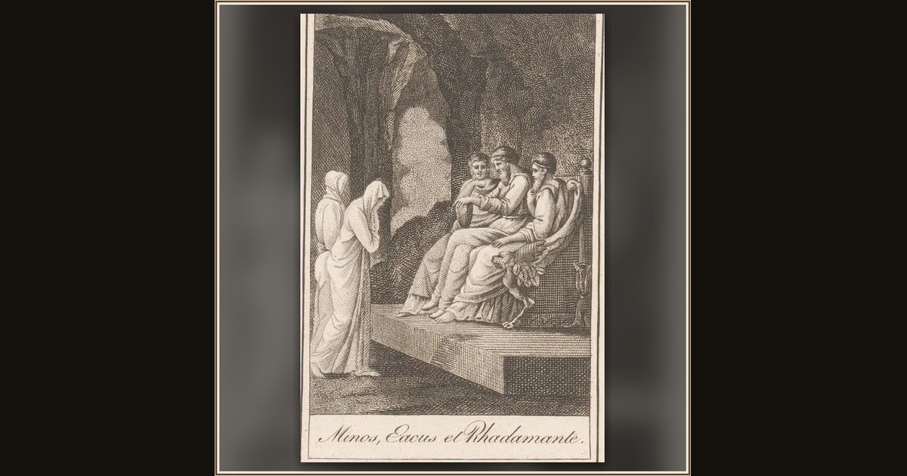

Minos, Aeacus en Rhadamanthys getroond (Minos, Eacus et Rhadamante.)
Unknown printmaker, France, after design by Pierre Jean Baptiste Isidore Choquet · 1784 - 1824 · rijksmuseum
The three judges of the dead sit enthroned in a cavern as veiled souls approach, the sons Zeus appoints in Socrates' closing myth: Minos, Rhadamanthus and Aeacus. (524a) Explore its place in Plato's Dialogues, Gorgias, section 385.